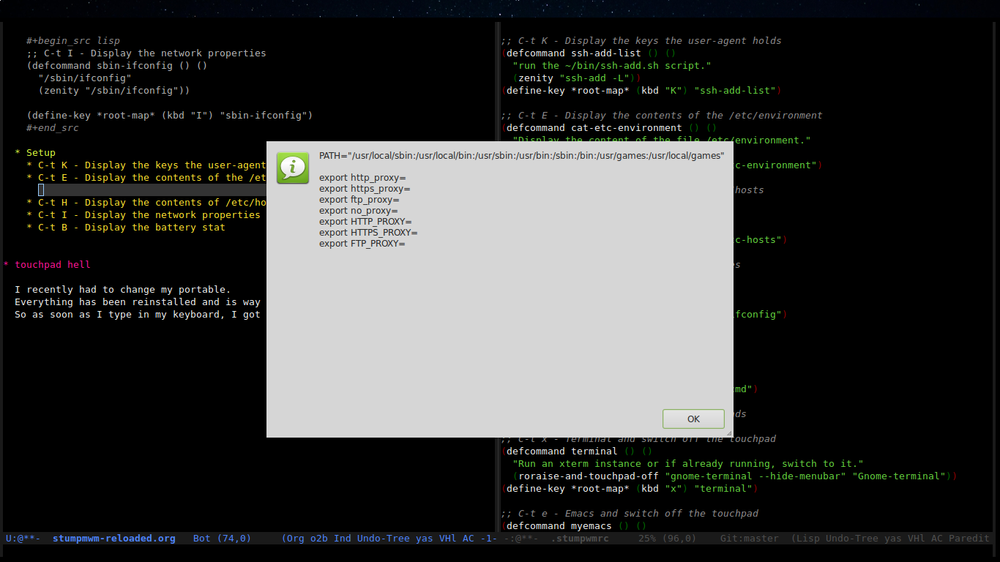
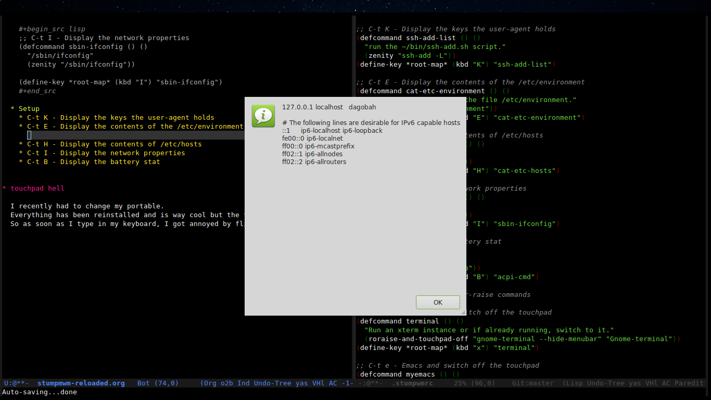
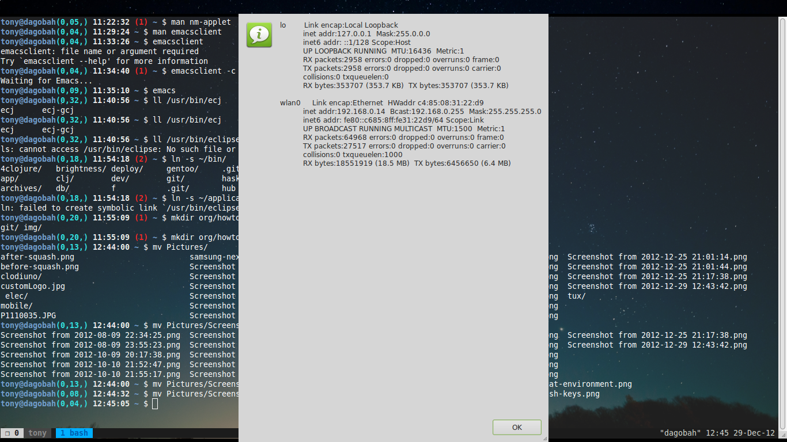
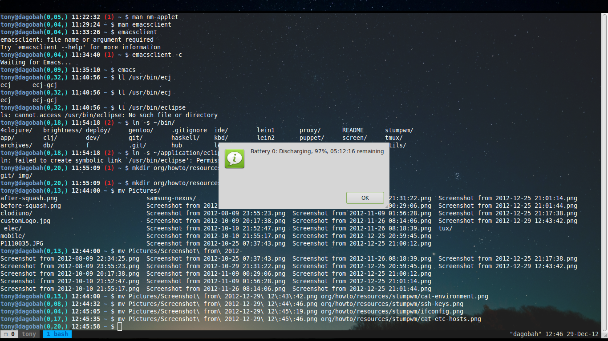

It has been some time now since i talked about stumpwm.
I wanted to do an update since I added/modified/upgraded some stuff in my setup.
But first of all, let me tell you something, stumpwm is really a great tool. After using it for almost 1,5 year, I did not regret one moment, It's:
In this post, I will show how I use zenity to display the result of bash commands I use often.
The package zenity is available in the ubuntu repository:
sudo aptitude install zenity
I often need to see the content of some files or some setup in my environment:
/etc/hosts
/etc/environment
/sbin/ifconfig
ssh-add -L
I already knew zenity but did not use it a lot.
In my case, zenity permits to display stuff inside small pop-up window. I also wanted to be able to copy/paste from it.
So it was time for some tinkering.
My snippet of code that permits to wrap calls to zenity:
(defun run-shl (&rest cmd) "A simpler command to run-shell-command with multiple params" (run-shell-command (apply #'concatenate 'string cmd))) ;; (defcommand name (args) (interactive-args) "doc-string" (body)) ;; wrapper around the zenity cli (defcommand zenity (command) () "Wrap a call to the cli and output the result into a zenity window" (run-shl "zenity --info --text \"$(" command ")\""))
Function to help in reading the shell command we want to launch.
Main function, wrap the call to the zenity shell command and tell it to display the result.
With a good separation of concern, we can now call the command we want to display its result:
(defcommand sbin-ifconfig () () "/sbin/ifconfig" (zenity "/sbin/ifconfig"))
And binds the key, here I to it:
(define-key *root-map* (kbd "I") "sbin-ifconfig")
(defcommand ssh-add-list () () "run the ~/bin/ssh-add.sh script." (zenity "ssh-add -L")) (define-key *root-map* (kbd "K") "ssh-add-list")
I won't show anything here, just know that I display the result of the command ssh-add -L
-L Lists public key parameters of all identities currently represented by the agent.
(defcommand cat-etc-environment () () "Display the content of the file /etc/environment." (zenity "cat /etc/environment")) (define-key *root-map* (kbd "E") "cat-etc-environment")

(defcommand cat-etc-hosts () () "cat /etc/hosts" (zenity "cat /etc/hosts")) (define-key *root-map* (kbd "H") "cat-etc-hosts")

(defcommand sbin-ifconfig () () "/sbin/ifconfig" (zenity "/sbin/ifconfig")) (define-key *root-map* (kbd "I") "sbin-ifconfig")

You have to install the package acpi on your machine first.
(defcommand acpi-cmd () () "acpi -b" (zenity "/usr/bin/acpi -b")) (define-key *root-map* (kbd "B") "acpi-cmd")
